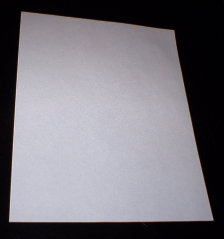

⛏I need a paper to write down my base coordinates.
拠点の座標を記録するために紙が必要です。
/aɪ ˈniːd ə ˈpeɪpər tə ˈraɪt ˈdaʊn maɪ ˈbeɪs ˈkɔɹdənɪts/
- need の末子音 /d/ が a /ə/ に連結 [ˈniːdə]
- to は機能語の弱形 /tə/ に弱化
アイ・ニーダ・ペイパー・タ・ライト・ダウン・マイ・ベース・コーディネイツ

⛏I need a paper to write down my base coordinates.
拠点の座標を記録するために紙が必要です。
⛏Paper is made from sugarcane at a crafting table.
紙はクラフティングテーブルでサトウキビから製造されます。
⛏You should collect paper and sugarcane for making books.
本を作るために紙とサトウキビを集めるべきです。
I need papers to craft enchanted books in Minecraft.
マインクラフトで魔法の本をクラフトするのに紙が必要です。
Those papers are essential for making maps.
その紙は地図を作るのに必須です。
He papers the walls with stone texture.
彼は石のテクスチャーで壁に紙を貼ります。
She papers the building exterior with white blocks.
彼女は白いブロックで建物の外観に紙を貼ります。
I papered the structure yesterday.
昨日、その建造物に紙を貼りました。
They papered the walls last week.
彼らは先週壁に紙を貼りました。
The walls are papered now.
壁は今、紙が貼られています。
Once papered, the building looks complete.
一度紙が貼られると、その建物は完成します。
I'm papering the walls of my base.
私の基地の壁に紙を貼っています。
He's papering the exterior with stone texture.
彼は石のテクスチャーで外観に紙を貼っています。